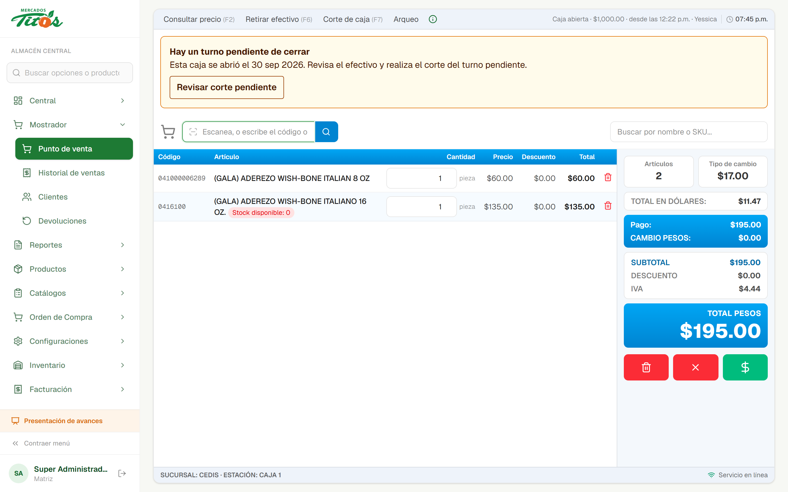
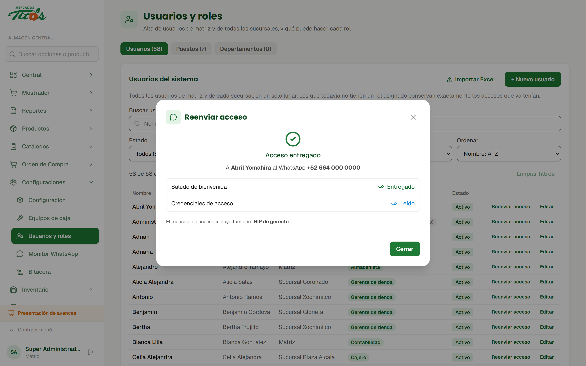
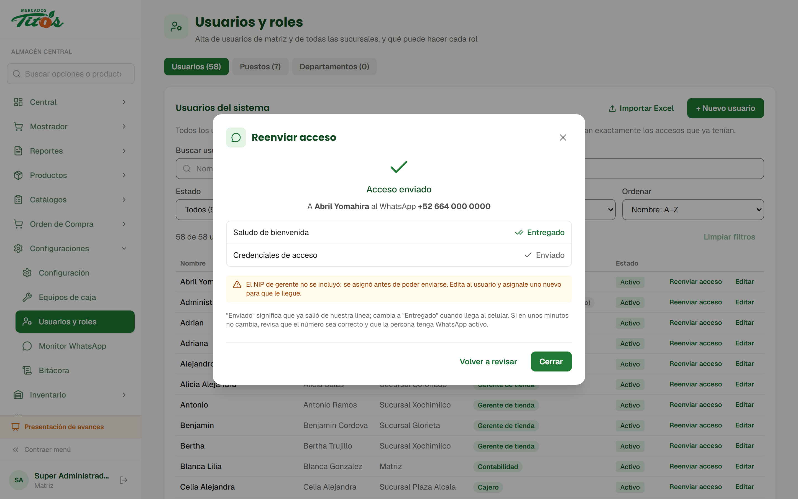
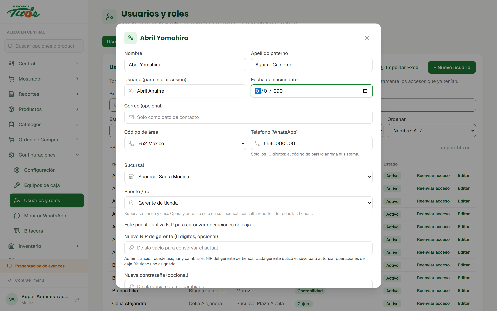
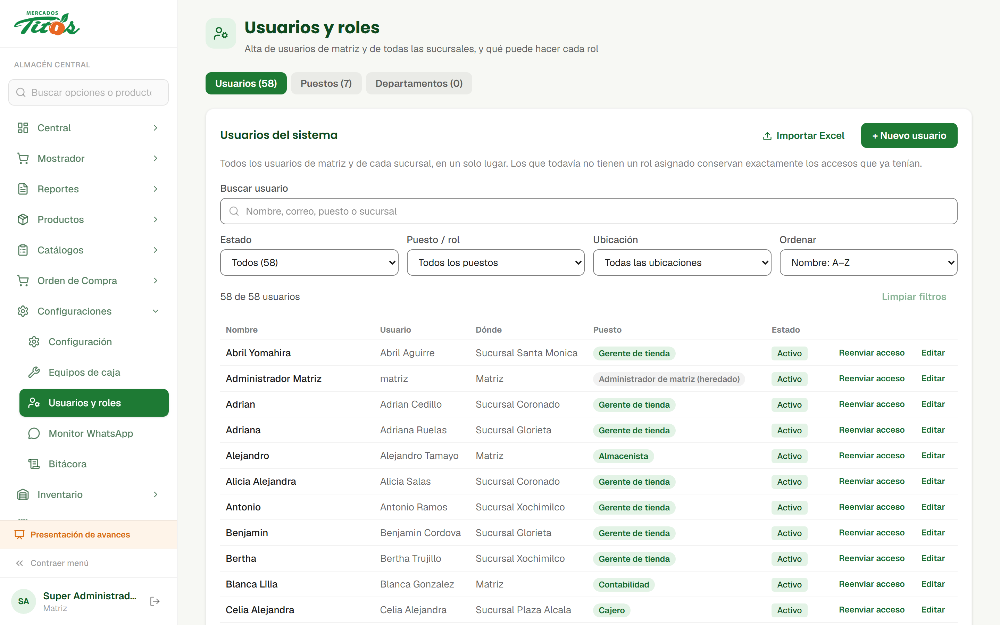
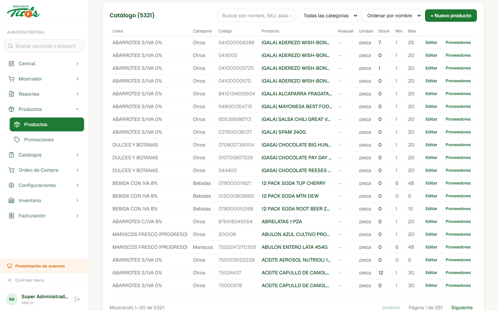
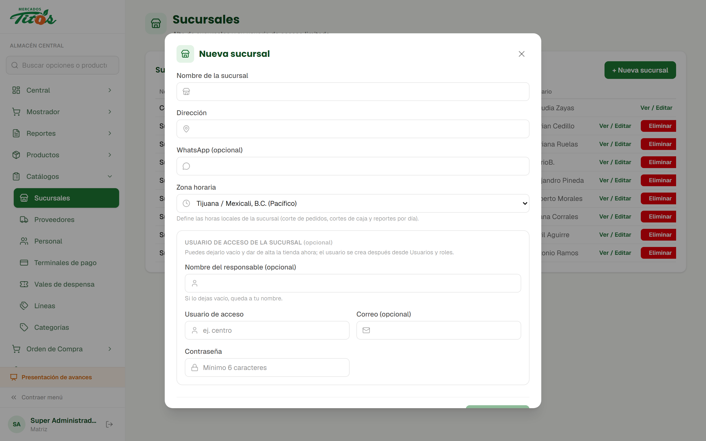
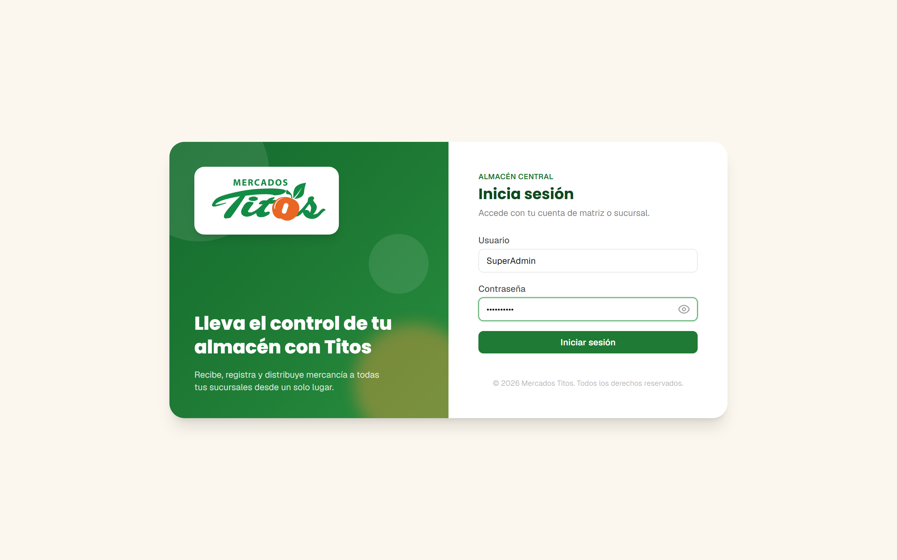

Escáner directo a la cuenta
Cada código que lee el escáner agrega el producto a la lista de cobro. Si se vende por kilo, abre la pantalla de pesado.
Diez puntos aplicados. El escáner de código de barras agrega el producto directo a la lista de cobro. El WhatsApp de acceso ahora confirma que el mensaje sí llegó y lleva los NIP que cada quien necesita. Además, todas las tablas del sistema quedaron a 20 renglones y más compactas.
Todos quedaron aplicados en el sistema. Aquí va un resumen de cada uno; más adelante se explican con pantallas.
Cada código que lee el escáner agrega el producto a la lista de cobro. Si se vende por kilo, abre la pantalla de pesado.
Algunos lectores agregan una letra al inicio o al final del código. Si así no aparece el producto, el sistema lo busca sin esa letra.
El gerente de tienda recibe su NIP junto con su usuario y contraseña, y quien administra usuarios recibe el NIP para crear supervisores.
Reenviar acceso abre una ventana con el estado real de cada mensaje (en cola, enviado, entregado o leído) o, si falla, la causa.
El teléfono se captura con los 10 dígitos y la lada la pone el sistema. Si se pega un número con lada, se recorta solo.
WhatsApp registra unos celulares de México como 52 y otros como 521. El sistema prueba las dos formas y manda a la que existe.
Todos los listados muestran 20 renglones por página, con filas más bajas y las acciones en una sola línea.
El responsable es opcional, y si se deja vacío la sucursal queda a nombre de quien la crea. El autollenado del navegador ya no bloquea el botón.
El inicio de sesión acepta el usuario con mayúsculas o minúsculas, y también con el nombre de la persona.
Un usuario sin correo ya no impide dar de alta a otros. Al editar, falta un dato y el formulario dice cuál, en vez de un error genérico.
Este era el pendiente principal de la semana pasada. El lector está conectado a la caja y el punto de venta lo consulta constantemente.
Lo que pasaba
El código escaneado había que pasarlo al campo de búsqueda. Además, si el lector agregaba una letra al código, el producto no se encontraba.
Lo que pasa ahora
Cada código nuevo que lee el escáner agrega el producto a la lista de cobro, igual que si se escribiera el código. Si el producto se vende por kilo, se abre la pantalla de pesado.
Si el código trae una letra de más, el sistema la quita y vuelve a buscar.

Si hay una ventana abierta (cobro, pesado o cancelación), el código no se procesa, para que nada se cuele en una venta que ya se está cobrando.
Si el mismo código llega por el teclado y por el lector casi al mismo tiempo, se cuenta una sola vez. Dos escaneos seguidos por la misma vía sí suman dos piezas.
Si el código no corresponde exactamente a un producto, la caja avisa "No se encontró" en vez de agregar uno parecido.
Antes, "Reenviar acceso" solo decía que el mensaje se había mandado. Ahora el sistema revisa con WhatsApp que realmente salga y llegue.



Si la línea de WhatsApp del sistema está desconectada o el número no tiene WhatsApp, la ventana lo dice en lugar de dar por enviado el mensaje.
Hay celulares de México registrados en WhatsApp como 521 y otros como 52. El sistema prueba las dos formas, guarda la que funciona y la usa en todos los envíos, así que ya no hay mensajes a chats que nadie ve.
Para poder reenviarlos, los NIP se guardan cifrados. Para autorizar se sigue usando la versión protegida de siempre, que nadie puede leer.
El mensaje sale una sola vez aunque la ventana se abra dos veces.
Antes, unos listados mostraban todo junto y otros paginaban de 15, 25 o 50. Ahora todos muestran 20 renglones por página, y cabe más información en pantalla.


Al buscar o cambiar un filtro, el listado vuelve al principio para que ningún resultado quede escondido en otra página.
El carrito, las líneas de una orden, pedido o devolución y las hojas para imprimir también se compactaron, pero siguen mostrando todo, para no perder renglones a medio capturar.
Correcciones a casos reales que se presentaron esta semana al dar de alta sucursales y usuarios, y al iniciar sesión.


Antes, si el navegador llenaba solo el correo o la contraseña, el botón "Crear sucursal" se desactivaba. Ahora esos campos solo cuentan si también se escribe el usuario de acceso.
Antes, si algún usuario no tenía correo, ya no se podía dar de alta a ningún otro sin correo. Ya está corregido, y si un usuario o correo se repite, el mensaje dice cuál.
El apellido y la fecha de nacimiento solo se piden si ya estaban capturados. Así se puede corregir un teléfono sin tener esos datos.
Recargar el navegador de cada caja con Ctrl + Shift + R para que cargue la versión nueva del punto de venta y del escáner.
Usuarios, contraseñas, ventas y sucursales existentes se conservan tal cual. Solo cambia cómo se envía el acceso y cómo se ven los listados.
Todo lo de esta semana está aplicado en el sistema.
En las pantallas con datos de personas, el teléfono, la fecha y la respuesta de WhatsApp son
de ejemplo.